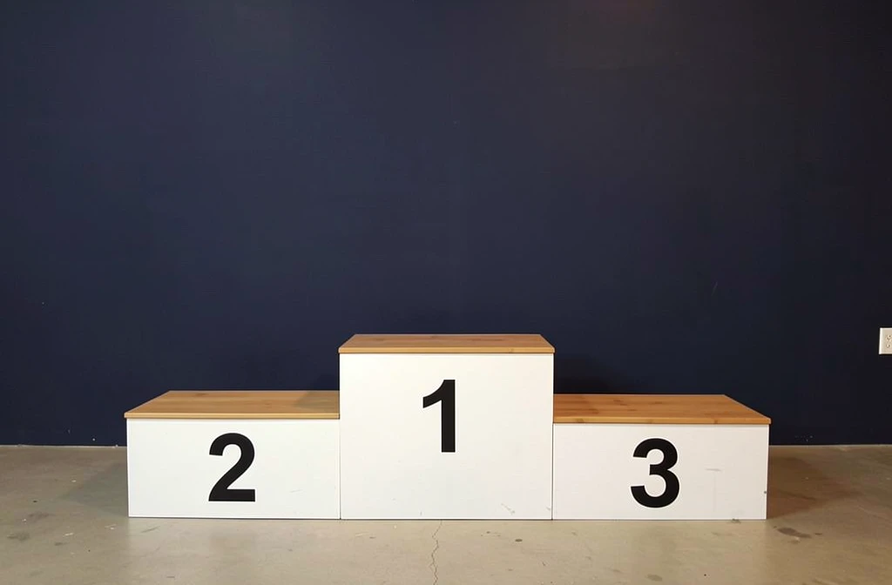

T2I Lens — what information do the text tokens carry?
We start our investigation with text tokens, given that is the common input across both the T2I and I2I models. We ask the question - what information do the text tokens carry inside the model? We do this by decoding the text tokens back into pixel space using an unconditional T2I forward pass.
Concretely, we run a normal I2I edit and save the text-token activations at one of the intermediate blocks of the model. We then start a separate T2I generation with no reference image and an empty prompt, and copy the saved activations onto its raw text embeddings (the input to layer 0). Because this second pass has no reference and no instruction of its own, anything in its output that resembles the original reference must have ridden in on the patched activations.

Reference

T2I baseline ("Add a podium", no patching)
T2I Lens (text-token activations patched in)
It is not obvious this should work at all. By the middle of the forward pass, the text tokens have been mixing with the reference tokens, and there is no reason they should still look like text to the rest of the model. The fact that the lens recovers something coherent says they do: the reference content they have picked up is held in a text-compatible form.